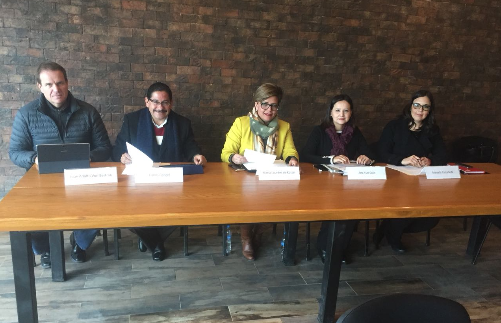

Se instala la Comisión Ejecutiva del Sistema Anticorrupción del Estado de Coahuila de Zaragoza
- Coahuila tiene un avance importante en los temas de fiscalización, transparencia, acceso a la información y rendición de cuentas, si logramos capitalizar ese avance, e incidir desde la Comisión Ejecutiva en la integralidad de la política contra la corrupción, podremos tener un avance en el Sistema Anticorrupción del Estado de Coahuila de Zaragoza.
La Secretaria Técnica de la Secretaría Ejecutiva del Sistema Anticorrupción del Estado de Coahuila de Zaragoza a cargo de la Mtra. Marcela Castañeda Agüero y los miembros del Consejo de Participación Ciudadana, con excepción del Presidente del mismo, la Mtra. Ana Yuri Solís Gaona, Lic. María de Lourdes de Koster López, Ing. Juan Adolfo Von Bertrab Saracho y Lic. Carlos Rangel Orona, en cumplimiento a lo que establece la Sección II, en los Artículos 30 y 31 de la Ley del Sistema Anticorrupción del Estado de Coahuila de Zaragoza, instalan la Comisión Ejecutiva como órgano auxiliar de la Secretaría Técnica.
Durante la instalación de la Comisión, la Secretaria Técnica verificó el quórum, dio lectura y se aprobó el orden del día.
La Comisión Ejecutiva tiene a su cargo la generación de insumos técnicos para que el Comité Coordinador realice sus funciones, por lo que elaborará las siguientes propuestas para ser sometidas a la aprobación de dicho Comité:
- Las políticas integrales de prevención, control y disuasión de las faltas administrativas y hechos de corrupción;
- La metodología y los indicadores que permitan dar seguimiento a las políticas y evalúen sus resultados;
- Los insumos necesarios para realizar el informe anual que contenga los avances y resultados del ejercicio de las funciones y de la aplicación de las políticas y programas en la materia;
- Las recomendaciones no vinculantes a las autoridades que se requieran, en virtud de los resultados advertidos en el informe anual, informes de seguimiento, así como,
- Los mecanismos de coordinación con el Sistema Nacional y los municipios.
Se estableció que la Comisión Ejecutiva contara con un coordinador, representado por el miembro del Consejo de Participación Ciudadana cuyo nombramiento sea el segundo en que se presente su vencimiento en el cargo, cuyas funciones son las de proponer los temas de las sesiones, así como, las recomendaciones no vinculantes que serán dirigidas a las autoridades que se requieran, a través del Secretario Técnico, en virtud de los resultados advertidos en el informe anual de la Secretaría Ejecutiva.
La Comisión celebrará, al menos, cuatro sesiones ordinarias al año y las extraordinarias que sean requeridas, mismas que serán convocadas por la Secretaria Técnica.
Por las labores que realicen como miembros de la Comisión Ejecutiva, los integrantes del Consejo de Participación Ciudadana no recibirán contraprestación adicional a la que se les otorgue por su participación como integrantes del Consejo de Participación Ciudadana, de conformidad con lo establecido en la Ley del Sistema Anticorrupción del Estado de Coahuila de Zaragoza.
Sesión de instalación de la Comisión Ejecutiva del Sistema Anticorrupción del Estado de Coahuila de Zaragoza. 14 de diciembre de 2017.
